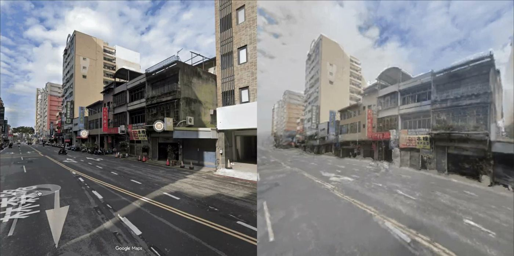
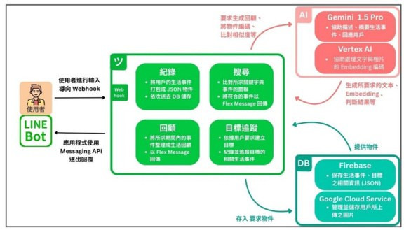
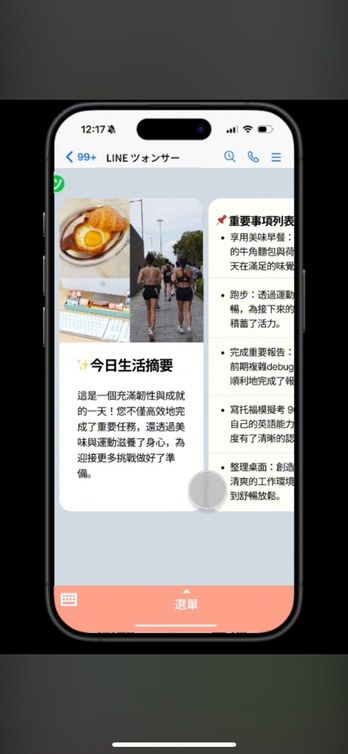

CityLayer
資訊工程專題。把單張街景全景圖依深度分層、補上被遮住的區域，各自訓練 3D Gaussian Splatting，讓使用者能在場景之間連續漫遊。我主要負責場景銜接模組。
延伸：把工房與窯場數位保存成可以線上漫遊的空間
資工本科裡，這四個專案最接近設計：它們處理的都是人怎麼看、怎麼做、怎麼和東西互動。

資訊工程專題。把單張街景全景圖依深度分層、補上被遮住的區域，各自訓練 3D Gaussian Splatting，讓使用者能在場景之間連續漫遊。我主要負責場景銜接模組。
延伸：把工房與窯場數位保存成可以線上漫遊的空間
人工智慧總整與實作期末專題。用 UMI 錄下人的示範動作，在 Isaac Lab 生成合成資料、訓練 diffusion policy，讓機械手臂學會疊杯、擺餐具，成功率 90%。我主要負責模型訓練與實驗比較。
延伸：記錄職人的手部動作，讓手藝變成可以傳授的知識
2026 梅竹黑客松 AMD 組第一名・梅竹大賞第二名
會記得你工作情境的毛絨貓陪伴裝置，結合 ESP32 感測與 AI 推論。我負責推論效能比較，以及裝置外觀的製作與設計。
延伸：讓技術藏在一個可以抱著的物件裡
227 組中入選前 12 組
一個零負擔的生活紀錄 LINE Bot：把零碎的文字和照片整理成每日、每週的回顧，幫人留住生活裡的小幸福。我主導產品規劃與 Figma 原型，負責使用者流程、功能架構與介面的資訊呈現，並用 322 份問卷驗證需求。
延伸：從使用者的需求出發，而不是從功能出發

